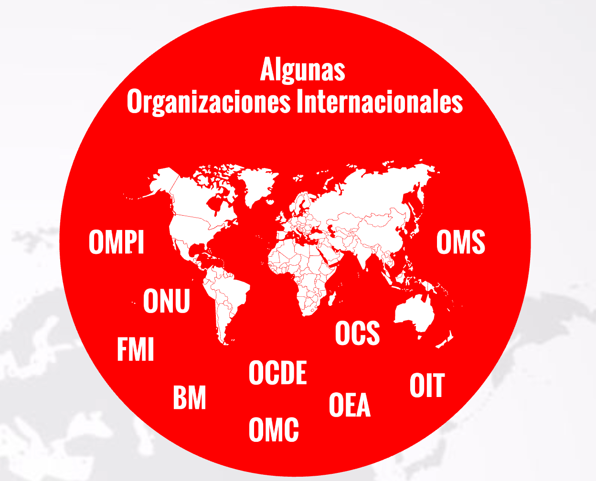
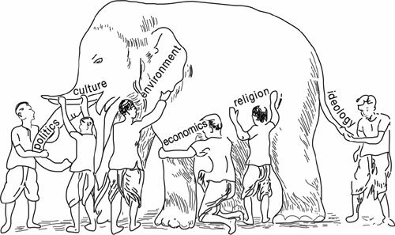
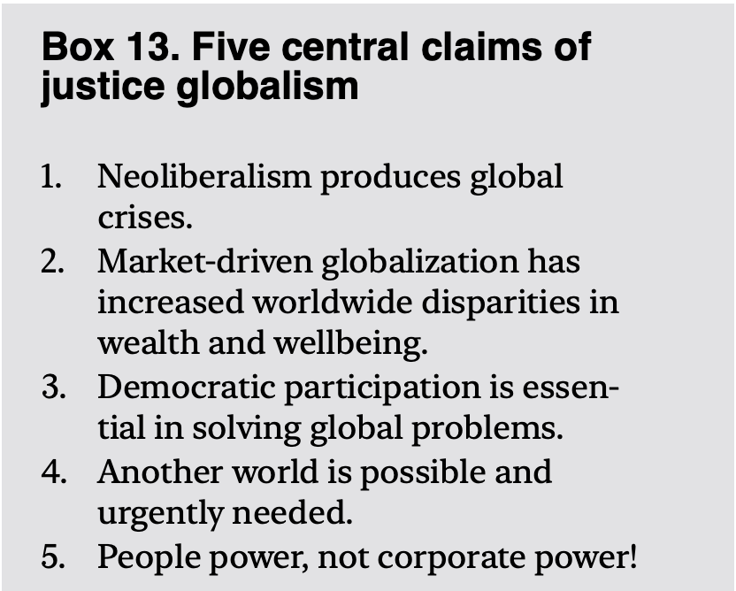
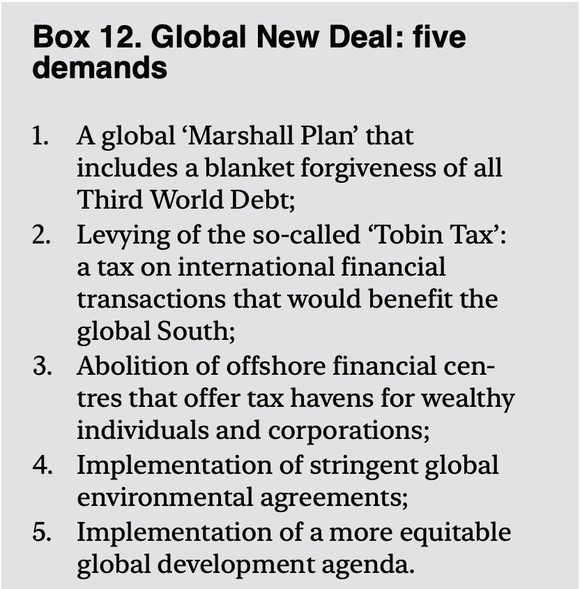
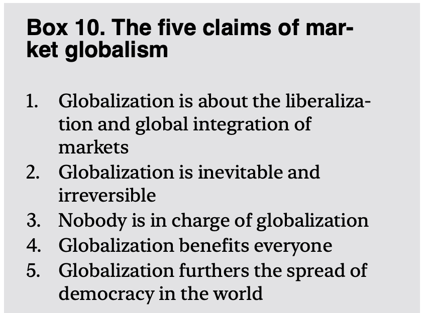
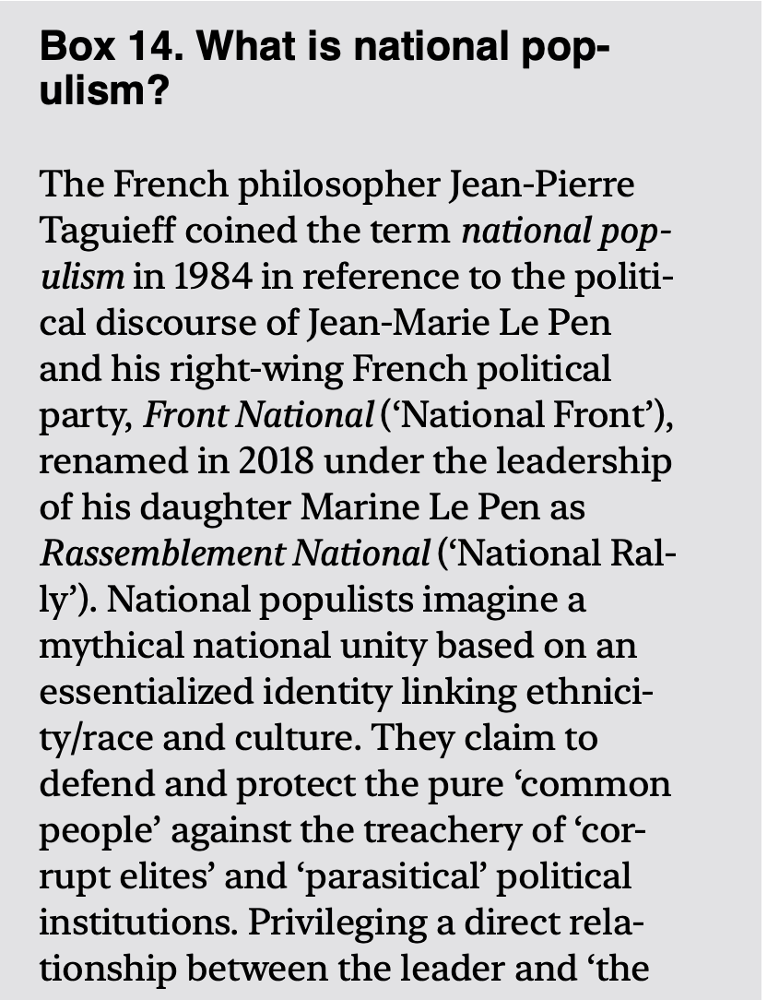
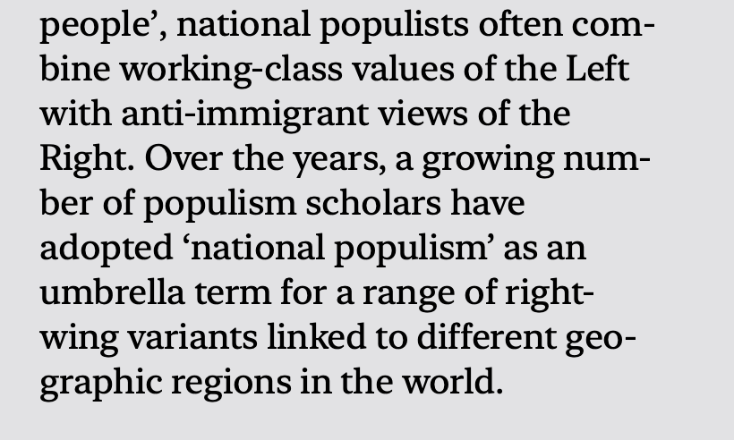

Preguntas guía
- ¿Qué acontecimientos han sido catalizadores, han limitado o han cambiado el rumbo de la globalización?
- ¿Cuáles son las "olas" de la globalización?
- Es la globalización, ¿un proceso, una condición, un sistema, una fuerza, una época?
- ¿Qué es la globalidad (globality)? ¿Qué es el globalismo (globalism)?
- How does globalization proceed? What is driving it? Does it have one cause or is there a combination of factors? Is globalization a continuation of modernity or is it a radical break? Does it create new forms of inequality and hierarchy? (p. 30)
- What does a proper chronology and historical periodization of globalization look like? (p. 35)
- Will these global crises eventually contribute to more extensive forms of international cooperation and interdependence, or might they stop the powerful momentum of globalization?
Algunos acontecimientos
1919Fundación de la OIT / ILO
1945Fundación de la ONU
1947Creación del GATT
1994Entrada en vigor del NAFTA
1995Creación de la OMC
2001China ingresa a la OMC / OCS · 9/11
2008–2009Crisis Financiera global
2010–2011Primavera Árabe
2013Iniciativa de la Franja y la Ruta (BRI / OBOR)
2014Anexión de Crimea
2016Brexit Referendum / Trump Presidente
2020Entra en vigor el TMEC (antes TLCAN) · Covid-19
2022Invasión Rusa de Ucrania
2023Nueva etapa en el conflicto israelí-palestino
2024Elecciones E.U.A.
Dimensiones de análisis
Epistemología (Teoría del Conocimiento)
- ¿Cómo podemos conocer?
- ¿Cómo conocemos / observamos?
Ontología
- Teoría de Sistemas
- Ciencias de la Complejidad
- No-lineal
- Asimetría
Temas clave
Videos — Epistemología y Ontología
Descubre lo que KANT piensa del CONOCIMIENTO 😲 [FÁCIL!!!] Kant #1
Emergence – How Stupid Things Become Smart Together
Videos — NAFTA → USMCA / TLCAN → TMEC
NAFTA explained by avocados. And shoes.
USMCA vs NAFTA, explained with a toy car
Videos — La deslocalización (Offshoring)
Deslocalización — Los Simpsons
Videos — La OIT
La Labor de la OIT
Videos — Economías "Ganadoras" y "Perdedoras"
The deceptive promise of free trade | DW Documentary
Globalization: Winners and losers in world trade (1/2) | DW Documentary
Globalization: Profits over people (2/2) | DW Documentary
Videos — Geopolítica
China, Rusia y la misteriosa OCS | ARTE.tv Documentales
Chinese company Cosco acquires stake in Hamburg port terminal | DW Business
Video privado (oFRnaQlfRWE)
Videos — Cadenas de Suministro
The life cycle of a cup of coffee — A.J. Jacobs
What's a smartphone made of? — Kim Preshoff
Supply Chain Crisis Explained Through The Journey Of A Single Sweater
Videos — Economía Informal y Precariedad Laboral
El revés de los mapas: Comercio mundial — crisis y fragmentaciones | ARTE.tv Documentales
Video privado (yElDN0z-Hpo)
Incautan fábrica CLANDESTINA de Coca Cola
Pobres a pesar de trabajar
El Precariado / The Precariat — Guy Standing
Videos — ¿Desglobalización? Decoupling?
The globalization backlash: A new world economic order? | Business Beyond
How Biden's Inflation Reduction Act changed the world | FT Film
Why Some Countries Are Thriving Amid Globalization's Decline
Economic decoupling: Is globalization dying or transforming? | DW Business Special
Videos — Coyuntura política
Aliados de Trump asistieron a la conferencia conservadora más importante de EE. UU.
Imágenes del mapa cognitivo
Infografía de la línea de tiempo

Imagen de cabecera






Referencia bibliográfica
Steger, M. B. (2013). Globalization: A very short introduction. Oxford University Press.